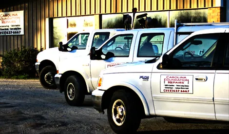
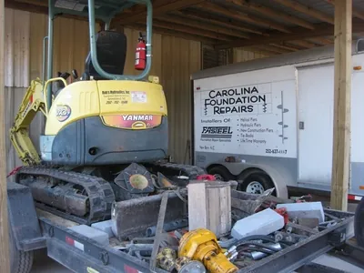
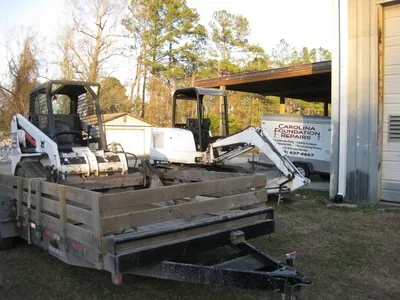

About
Owned by an engineer. Run from a real shop.
“Don’t trust your most valuable asset to some fly by night contractor working out of his home or truck.” That line is on their site, and the shop on NC Hwy 55 backs it up.
The company
Carolina Foundation Repairs is owned by Sean Corcoran, a professionally licensed engineer who treats every job as its own problem and checks for the cause, not just the cracks you can see. The company says it has completed more than 2,000 structural repair projects across Eastern North Carolina, from Greenville to Jacksonville.
Customers name Sean on inspections and Patty in the office. The crew carries its own stock of helical piers and brackets, a mini excavator, an excavator and a Bobcat loader.
Placeholder founding year. Their site says both “since 1995” and “the past 15 years” (written in 2012), and BBB lists 2000. One date needs confirming before launch.
On record
- NC general contractor
- License L.54562, Building, Limited. Active, first issued January 2004. Qualifier Sean Corcoran.
- Engineering
- Sean Corcoran, PE, PLLC, P‑1776
- Shop
- 424 NC Hwy 55 West, New Bern, NC 28562
- Hours
- Monday to Friday, 7:30 to 4:00
- Service area
- Greenville to Jacksonville and across Eastern North Carolina
License from the NC Licensing Board for General Contractors. Firm number from their site.
The yard





Photos from the About Us page of their current site, 2012. Placeholder current crew photo.